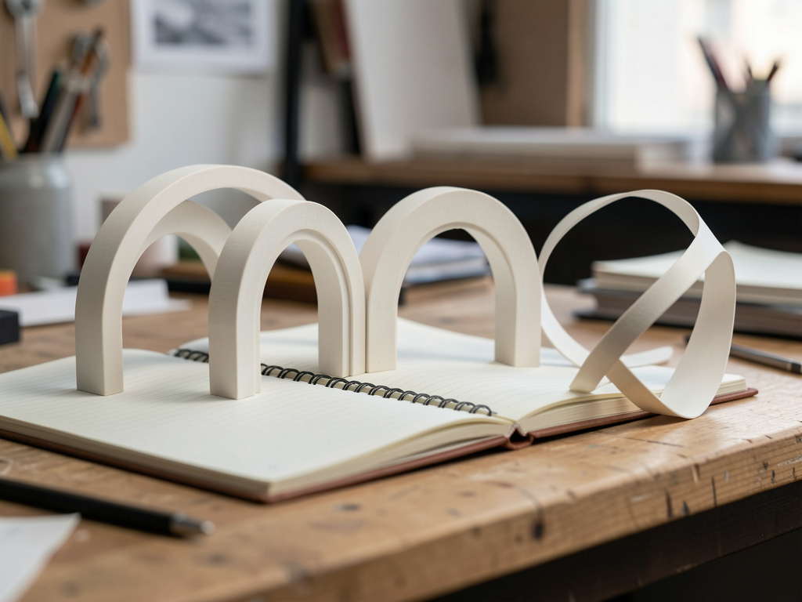

Três modelos com cenas 3D para transformar suas ideias em presença. Personalize no navegador e leve o site pronto com você.

Astra3D é uma biblioteca de sites personalizáveis. As cenas já vêm incluídas: você muda seu conteúdo e confere o resultado na prévia.
Órbita para portfólio, Forma para agência e Caderno para publicação. Cada modelo tem uma cena geométrica original.
Textos, imagem, cinco paletas, duas tipografias e três opções de movimento. Controle as seções e personalize até seis itens.
Exporte um HTML com fontes e cena incluídas. Salve também o JSON para voltar a editar o projeto.
Tudo na primeira versão acontece no navegador. Não é preciso criar uma conta nem conectar um serviço de IA.
Astra3D exporta o site; a hospedagem do seu site é escolhida por você. Publicação automática de sites dos visitantes está planejada para a V6.
Para usar online: um navegador atualizado, seus textos e, se quiser, uma imagem PNG, JPG ou WebP de até 8 MB. Não há chave de API para configurar.
Tenha o nome da marca, uma apresentação, seus projetos ou artigos e um link real de contato. As imagens são processadas localmente.
Use Node.js 22.12+ ou 24, npm e Git. O arquivo de dependências acompanha o repositório.
git clone https://github.com/inematds/astra3d.git cd astra3d npm ci npm run dev
Comece pelo editor. Use o guia abaixo para personalizar, guardar uma cópia e publicar.
Abra a galeria e selecione Órbita, Forma ou Caderno. Cada modelo mantém seu próprio rascunho neste navegador.
Na aba Conteúdo, altere o nome, a chamada, a apresentação e o texto Sobre. Adicione uma imagem e sua descrição. Configure o botão com seu endereço real.
https://seu-site.com/contato mailto:voce@exemplo.com
Links inválidos não são exportados. Sem link de contato, o site não mostra um botão que finge enviar mensagens.
Escolha uma paleta e tipografia na aba Aparência. Em Seções, edite projetos ou artigos, adicione ou remova itens e escolha quais seções aparecem. Retire o aviso de exemplo somente após substituir o conteúdo.
Alterne a prévia entre computador e celular. Role dentro dela, para frente e para trás. Abra os projetos e teste seus links. No Caderno, experimente a busca e as categorias. No celular, use os botões Personalizar e Ver prévia.
O movimento acompanha a rolagem. Quem usa movimento reduzido recebe uma cena parada; sem WebGL, o conteúdo continua acessível.
Use Salvar JSON para guardar o projeto editável. Use Exportar site para baixar o HTML pronto, com fontes, imagem e cena incluídas. Abra o HTML diretamente no navegador, inclusive offline.
meu-site.astra3d.json # backup para importar no editor meu-site.html # site pronto para abrir e publicar
Limpar os dados do navegador apaga rascunhos locais. O histórico de desfazer dura a sessão. Se aparecer um aviso de armazenamento, baixe o JSON antes de sair.
Renomeie o HTML para index.html e envie para sua hospedagem estática. Em um repositório GitHub Pages já configurado para servir HTML estático, coloque esse arquivo na pasta publicada. O editor não pede sua senha nem publica em sua conta nesta versão.
index.html
Para compilar e publicar o próprio editor Astra3D, o repositório inclui um workflow GitHub Actions que publica dist/:
npm run test npm run build npm run preview
Os textos iniciais são demonstrações, não clientes ou resultados reais. Escolha uma experiência e substitua as informações pelas suas.
Portal de anéis 3D, apresentação profissional, projetos com leitura expandida e contato.
Fita escultórica, descrição do estúdio e cases que abrem desafio, processo e entrega.
Livro tridimensional, busca de textos, categorias e leitura completa. Não coleta e-mails sem um serviço externo seu.
Apenas V1 está disponível. As próximas etapas são planos, com dependências e critérios de aceite documentados.